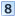
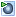
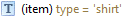
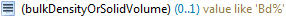
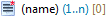

Schema elements
Schema elements are displayed in a uniform way throughout the
application. Following is a detailed explanation what the concrete
representation of a schema element stands for.
Classifications
Schema elements are classified according to their nature, the
icon displayed for a schema element represents that classification.
Types
|
A type defined in the schema. |
|
An abstract type definition, for which there may not be any
data instances. |
|
Certain types are classified as Feature Types, these
are the main type imported from a Shapefile and types from
GML application schemas that extend the GML AbstractFeatureType.
|
|
Feature Types that are abstract. |
Groups
 |
Normal group containing a set of properties. |
|
Choice group, where only one of the specified properties is
allowed as a child. |
Properties
|
String property |
|  |
Numeric property |
|
Geometry property |
|
Other (complex) property |
Icon augmentations
On top of the classification icon, additional information may be
provided through a small overlay image augmenting the icon.
|
A red asterisk marks properties that are mandatory, i.e.
they occur exactly once and must have a value (and the value may not
be null).
|
|
A small brown error in the top left corner marks a property
from a XML schema as being defined as a XML attribute. |
|  |
A property that is deemed to hold the main geometry of a
type is marked with a small green triangle. Per type, you can set
one property as the default geometry property. This property is then
used when retrieving geometries for display in the map. |
Contexts
If the name of a schema element is displayed in brackets, this
indicates that the element represents a context defined on the
original schema element. Depending on the nature of the context, a
description may be displayed (brown colored text).
Source schema contexts
| Condition context on a type, limiting
associated mappings to source instances matching the condition. |
|  |
| Condition context on a property, limiting
associated mappings to property values matching the condition. |
|  |
| Index context - only the property value at
the given zero-based index is used. In this example the element
represents the first value of the name property. |
|  |
Target schema contexts
| Instance context - represents an additional
instance of a property. |
 |